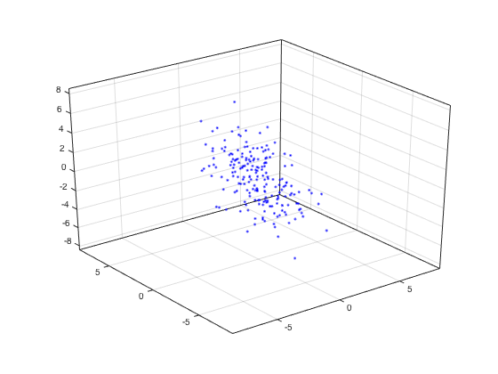
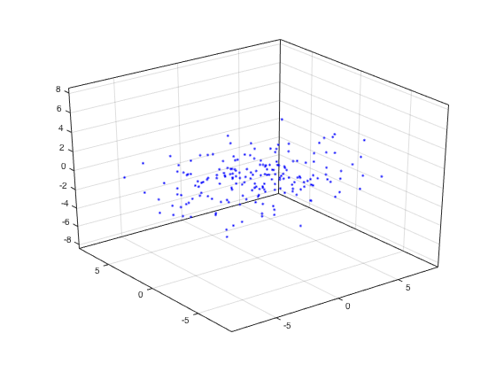
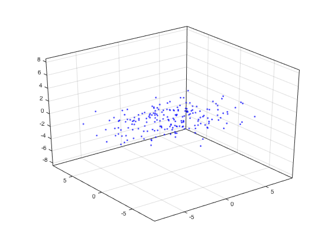
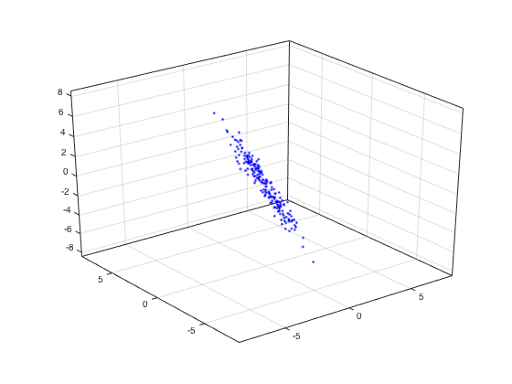
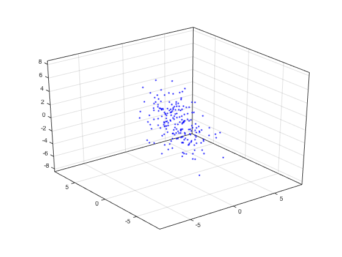

Illustration of 3D PCA
This code illustrates PCA for a 'toy' example. PCA gives a way to approximate an N-point vector by an M-point vector with M < N.
Contents
Make data for example
L = 200; % number of data points % generate data for example C = [1 2 -1; 2 2 1; -2 0 2]; X = C * randn(3,L); % display data plot3(X(1,:),X(2,:),X(3,:),'b.') grid box on m = max(abs(X(:))) ax = [-1 1 -1 1 -1 1]*m; axis(ax); set(gca,'Projection','perspective'); rotate3d on % data is zero mean - no need to subtract mean first.
m =
8.4549
 Compute PCA matrix
A = X * X'; % data covariance matrix - 3 x 3 matrix % compute eigenvectors and eigenvalues [E,D] = eig(A); % check that A = E D E' err = A - E * D * E'; max(abs(err(:))); % eigevalues in descending order d = diag(D); [tmp, k] = sort(-d); % resort d = d(k) D = diag(d); E = E(:,k); % check that A = E D E' err = A - E * D * E'; max(abs(err(:))); % Set P matrix P = E';
d =
1.0e+03 *
2.9586
1.1735
0.3095
Transform data to new coordinates
Decorrelate data
% transform data Y = P * X; % display new data plot3(Y(1,:),Y(2,:),Y(3,:),'b.') grid % axis equal box on set(gca,'Projection','perspective'); axis(ax);
Approximate each 3-point data vector using two values
Y(3,:) = 0; % display approximate data plot3(Y(1,:), Y(2,:), Y(3,:),'b.') grid % axis equal box on set(gca,'Projection','perspective'); axis(ax);
Transform back to original coordinates
The approximate data lies in a 2-dimensional plane
X_approx = P'*Y; % display approximate data plot3(X_approx(1,:),X_approx(2,:),X_approx(3,:),'b.') grid % axis equal box on set(gca,'Projection','perspective'); axis(ax);
Computer square error
err = X - X_approx; RMSE = sqrt( sum( abs( err(:).^2 ) ) )
RMSE = 17.5917
change view
% view(-60, 18)
change view
% view(-66.7, 7.8)
What if we drop the leading component?
Error should be higher..
% transform data Y = P * X; Y(1,:) = 0; X_approx_2 = P'*Y; % display approximate data figure(2) clf plot3(X_approx_2(1,:), X_approx_2(2,:), X_approx_2(3,:),'b.') grid % axis equal box on set(gca,'Projection','perspective'); axis(ax); rotate3d on
Computer square error
err_2 = X - X_approx_2; RMSE_2 = sqrt( sum( abs( err_2(:).^2 ) ) )
RMSE_2 = 54.3933